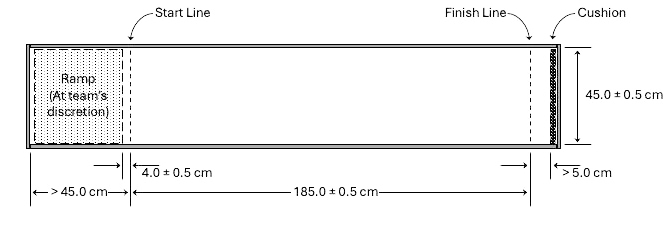
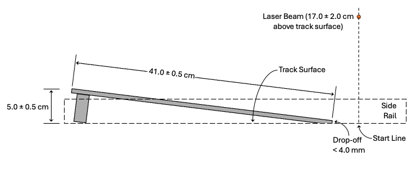

Build · Division B · 2026–2027 Season
Prior to the competition, participants will design, construct, and calibrate a self-propelled,
air-levitated vehicle to carry nickels down a track.
A TEAM OF UP TO: 2 APPROXIMATE TIME: 10 minutes
EYE PROTECTION: B IMPOUND: Yes CALCULATOR: Class III
competition time. The vehicle must be impounded with the batteries stored separately and presented to
the Event Supervisor for inspection. No additional papers/notes may be brought into the competition
area after impound.
items that do not travel with the hovercraft on its competition runs. Tools utilizing lasers are not
permitted.
proper eye protection must be immediately informed and given a chance to obtain eye protection if time
allows.
TRACK sections. Teams should not bring their own masses, track, or ramp.
configuration. Vehicles must not modify or damage the track.
mechanical switches, relays, resistors (including potentiometers and rheostats), capacitors, and up to
two motors (including brushless motors). Integrated circuits (other than those that are an integrated,
manufactured part of a commercial motor) are not permitted.
circuit. They may be operated manually by a person or by contact with another part of the
hovercraft.
demonstrate levitation by pushing the vehicle slightly down. If it then rises, it is levitating. Contact
of vehicle components with the track surface or inside edge of the track’s side rails is permitted.
Vehicle components cannot contact the top or outside edge of the side rails.
are permitted to power other vehicle functions such as a timing system.
attached within 3.0 cm of its front edge such that the top end is at least 20.0 cm above the track’s surface
when levitated. The dowel must be placed on the hovercraft so that it will be the first part of the vehicle
to break a laser timing beam when the vehicle is traveling forward.
dowel from touching them.
motors. The label on each battery must be the manufacturer’s original and easily viewable by the
Event Supervisor. Lithium and lead batteries are prohibited. Multiple batteries may be connected
together as long as the expected voltage across any two points does not exceed 12.0V , as calculated
by their individual labels.
and stopping. Relying on inserting batteries or twisting wires together to start is not allowed. If more
than one motor is used, they may be combined on the same switch or wired on separate switches.
vehicle per the Building Policy found on www.soinc.org.
materials, or communication until they are finished competing.
be notified as soon as possible if a vehicle is out of spec. Teams may modify the vehicle to bring it into
compliance during their testing period.
Event Supervisor will not be allowed to run unless brought into compliance. If the team is unable to bring
the vehicle into compliance with 3f, the vehicle will not run and will only receive Participation points.
will be between 6.0-18.0 seconds in intervals of 1.0 seconds for Regionals and 0.5 seconds for States/
Nationals. The TT will be the same for all teams.
team’s competition time ends after two complete or two incomplete runs or the competition time
limit has been reached (whichever comes first). Practice runs are not allowed.
substance. Teams may take measurements of the track and the surface it is on, but may not request
changes to the track’s position or leveling.
rolls of nickels. Participants will select how much mass, if any, the vehicle carries and this amount
may vary by run. Participants will not be allowed to unroll, break, or alter the packaging of the
nickels nor will they be allowed to use any adhesive or tape to affix the rolls or nickels to the vehicle;
any vehicle that requires such measures to carry the nickels and/or rolls will not be allowed to use
masses during their competition runs.
dowel fails to cross the finish line within ( 2 x TT) seconds. Teams are not allowed to declare a run as
incomplete. A run is complete if it is not incomplete.
a run (either complete or incomplete). A run will be allowed to finish and will be counted in the scoring
as long as it is started before the 8-minute period has elapsed.
construction penalty (not one per item) for the run. Any nickels or rolls that fall off before the Event
Supervisor tells the team to turn off the vehicle at the completion of the run do not count towards
the Mass Score.
launching of their vehicle. In such cases, the Event Supervisor will place the ramp in the same position
for all teams. Using the ramp will impact the team’s score (7.f.v and 7.d.iii), and the time for placing the
ramp will come out of the 8-minute period. The team may change this decision for each run.
start line. The team may start anywhere behind the start line. The Event Supervisor will provide
and hold a wood block against the front of the vehicle to hold it in place . The team then activates
their vehicle’s motor(s) and removes their hands from the vehicle.
block. Timing starts when the vehicle’s dowel crosses the start line and stops when the dowel crosses the
finish line. If photogates are used, the dowel must be the first part of the vehicle to break the laser beams
at both the start and finish lines.
with its run in any manner until the Event Supervisor states they may do so. If touched or interfered
with, the run is counted as a complete run with a DS, TS, and MS of 0.
at the point where the run was declared incomplete to prevent the vehicle from moving. The ES will
ask the competitors to turn off their vehicle without moving it, and the ES will then record the distance
from the finish line to the position of the dowel. The team’s testing period time will halt while the Event
Supervisor makes measurements and will resume when the measurement time is done.
wrapper, folded snugly against the nickels.
with the ends trimmed to minimize the excess paper, and folded snugly against the nickels.
nickels can make a mass approximately between 5 g and 1 kg.
smooth floor or other firm smooth base surface, such as a countertop. The outside boundary of the track
is composed of rails each with a height at least 30.0 mm (standard 2x4 framing studs or steel framing
studs recommended). The Event Supervisor will also supply a cushioned barrier to stop vehicles and a
wood block to hold the vehicle at the start line. Example setups are at www.soinc.org.
room’s floor as a base. In either case, Event Supervisors should clean the base of the track (or the
floor) at the start of the day and should provide as level a surface as possible. Small imperfections
in the track’s base surface, though, do not disqualify the track for tournament use; the point of a
hovercraft is to traverse uneven terrain. Tournaments are encouraged to make available ahead of
time information about the type of surface the tracks will have.
at least 45.0 cm from the end of the track. The finish line must be marked 185.0 ± 0.5 cm from the start

line and a cushioned barrier at least 5.0 cm past it must block the channel.
lines with the beams at a height of 17.0 ± 2.0 cm. At least one manual timer should be used as a backup.
If photogates are not being used, three timekeepers should be utilized with the median time used as the
official Run Time; lasers are recommended to be placed at the start and finish lines so the timekeepers
only have to watch for the flash of light as the dowel cuts through the laser beam. Time is recorded in
seconds to the device precision if photogates are used, or to the tenth of a second if manual timers are
used.
vehicle. The ramp should have a smooth, flat surface and must span the width of the track between the rails.
The height of the ramp is 5.0 ± 0.5 cm and the length of the ramp’s surface is 41.0 ± 0.5 cm. When the ramp
is placed on the track, the edge where the
vehicle exits the ramp must be 4.0 ± 0.5 cm
behind the start line. At the bottom of the

ramp, where it meets the track surface, the
transition should be reasonably smooth,
with a drop-off from the ramp surface to
the track surface of no more than 4.0 mm.
See www.soinc.org for information on
how to build a ramp and track.
2 complete rolls and the half roll, the # of nickel rolls is 2.5)
Mass Score for the distance traveled in incomplete runs
counted.
possible.
during that run.
during that run.
has the most construction violations, or, in the case of a vehicle that does not have any runs in the
competition time, the number of construction violations per 4b ; 3rd – Best MS, 4th - 2nd Best Run
Score